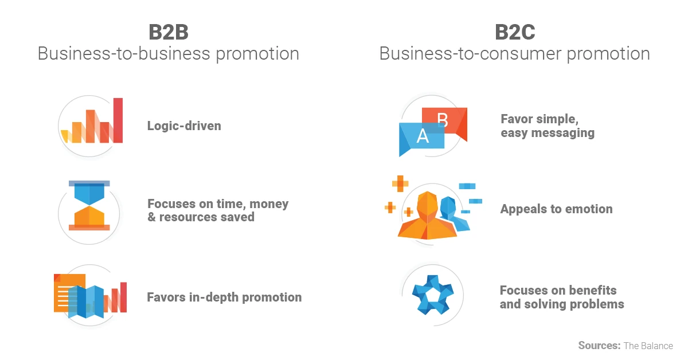

B2C adalah jenis transaksi perdagangan di mana pelaku bisnis menjual produk atau layanannya langsung kepada konsumen.
B2C mengacu pada proses penjualan secara langsung antara bisnis dengan konsumen yang merupakan pengguna akhir produk atau layanan (end-user).
Contoh transaksi model B2C juga sering kita temukan di kehidupan sehari-hari, misalnya saat membeli makanan, menggunakan jasa ojek online, laundry, atau membeli baju di mal.
B2C adalah model penjualan yang melibatkan pelaku bisnis dengan pelaku bisnis lainnya.
Jadi target pasar pada model B2B bukanlah konsumen umum, melainkan ke perusahaan atau pelaku bisnis lain.
Model bisnis B2B biasanya terjadi dalam rantai pasok (supply chain) di mana perusahaan membeli barang baku dari perusahaan lain untuk digunakan dalam proses manufaktur. Transaksi antara produsen dengan penjual grosir atau pengecer, dan perusahaan penyedia layanan juga termasuk ke dalam B2B.
Perbedaan B2C dan B2B dapat dilihat dari beberapa aspek meliputi:
Perbedaan utama B2C dan B2B terletak pada pelanggan yang dituju. Barang yang dijual bisa saja sama, namun siapa pembelinya adalah yang menentukan apakah transaksi tersebut termasuk ke dalam B2C atau B2B. B2C memiliki target pasar konsumen sebagai end-user. Sedangkan B2B menyasar kepada perusahaan atau pelaku bisnis lain, bukan ke konsumen.
Untuk model harga, bisnis B2C biasanya hanya menerapkan satu harga untuk semua pelanggan. Harga tersebut bisa berubah hanya karena dipengaruhi potongan diskon atau promo yang diadakan. Sementara bisnis B2B biasanya menawarkan beberapa variasi harga berdasarkan jumlah dan frekuensi pemesanan. Hal tersebut karena transaksi pada B2B bersifat skala besar. Penawaran harga pun bisa lebih bervariasi tergantung pada pemesanan yang dilakukan.
Perbedaan B2C dan B2B selanjutnya ialah pada marketing. Karena memiliki target pasar yang berbeda, strategi dalam pemasarannya pun juga berbeda.
Strategi marketing yang dilakukan pada bisnis B2C biasanya lebih gencar dalam mengadakan diskon dan promo. Selain itu, untuk menggaet target konsumen, B2C banyak membangun engagement melalui social media marketing dengan mengadakan giveaway, challenge, dan sebagainya.
B2B lebih fokus pada membangun reputasi perusahaan dalam menjalankan strategi marketing. Maka itu, strategi yang biasa dilakukan adalah dengan menampilkan portofolio dan konten-konten yang memang menunjukkan keahlian bisnis tersebut di bidangnya. Hal tersebut biasa dilakukan untuk meyakinkan calon klien terhadap kredibilitas perusahaan.
Perbedaan selanjutnya terletak pada kompetitor. Bila dilihat dari jumlah pelaku bisnis, B2C memiliki persaingan yang lebih tinggi dibanding B2B. Pelaku bisnis model B2C sangat banyak, tak terhitung mulai dari perusahaan besar hingga UMKM. Maka dari itu, para pelaku bisnis B2C harus bersaing lebih gencar untuk meningkatkan penjualan.
Berbeda halnya dengan B2B, yang pelaku bisnisnya saat ini belum sebanyak B2C. Persaingan yang dihadapi B2B lebih mengarah kepada membangun reputasi antara perusahaan. Hal ini juga tidak bisa dibilang mudah, ada banyak faktor yang memengaruhi suatu perusahaan bernilai baik di mata klien.
Jadi, B2C dan B2B adalah model penjualan. Meski keduanya termasuk ke dalam model bisnis, target pasarnya berbeda. Dengan target konsumen sebagai pembelinya, pelaku bisnis B2C bisa dibilang sangat banyak. Berbeda dengan model bisnis B2B, yang menyasar ke sesama pelaku bisnis atau perusahaan sebagai target pasar.
Referensi: Dewaweb